别听马斯克吹牛！特斯拉 Optimus 也不是通用人形机器人【科技狐】
时长 23:19 · 分辨率 852x480 · 生成于 2026-08-23 | 来源
ref/BV17W8q6LED8.mp4· 视频链接
概述
本次对话围绕机器人产业展开，嘉宾分享了在中国实际应用场景中的观察，指出机器人已从实验室走向真实场景，并演化出新的组织形态。讨论涵盖机器人管理、通用与人形机器人路线之争、与自动驾驶的类比、特斯拉及马斯克的战略争议、机器人落地场景选择、人机关系未来，以及2029年泡沫风险的预判。核心观点是：短期内通用型机器人难以实现，特定场景的解决方案将率先落地；机器人管理将成为一门新学问；未来人机边界清晰，但人与Agent的边界将更模糊。
中国机器人产业的实际观察
应用场景丰富，已非实验室阶段
- 中国机器人应用场景非常多，且是实际应用场景而非实验室场景。
- 在大量应用场景驱动下，中国已演化出机器人新的组织形态和社会形态，这些原本只在科幻小说或思想实验中设想。
酒店机器人管理实践
- 酒店管理中，一个酒店实际管理着十几个机器人。
- 实践中发现的问题：如何让机器人协同、如何评估其行为是否符合价值观。
- 解决方案探索：
- 给每个机器人设定一个智能体。
- 机器人可汇报当天工作，管理者判断其行为对错。
- 机器人会记住反馈，举一反三。
- 一个机器人学会后，其他机器人会跟着学。
- 每个机器人有自己的特点，甚至形成自我认同（如“我有点跛脚的机器人”），某些任务由特定机器人完成效果更好。
- 这些问题是在实践中一边解决一边涌现的。
具身智能进展与大脑瓶颈
- 小脑（具身性） 越来越强，能做出各种动作。
- 大脑（认知与决策） 问题仍未解决，很多场景仍靠遥控操纵。
- 目前方案均局限在特定场景，缺乏对世界的通用认知。
未来几年机器人发展判断
通用型机器人短期内不可行
- 未来几年，机器人不太可能出现通用型方案，人形机器人“到哪儿都能干”不太可行。
- 更多是特定场景的解决方案，在更多场景落地。
- 短期内（至少是未来几年），通用机器人达不到。
与自动驾驶的类比
- 自动驾驶是单一应用，可视为机器人里最简单的任务，因为它不需要对物理世界有充分了解。
- 自动驾驶已到L4水平（FSD端到端基本没问题），说明最简单的机器人处理方案落地没有问题。
- 类似地，固定场景的解决方案机器人可以做得很好。
固定场景 vs. 复杂场景
| 场景类型 | 示例 | 可行性 |
|---|---|---|
| 固定场景 | 冲咖啡、泡面、做头像 | 可做得很精致 |
| 半固定场景 | 酒店送咖啡到房间 | 需要较高智能，已在实践中 |
| 复杂场景 | 酒店收盘子（桌面凌乱）、踢足球 | 无法固定化，难以实现 |
对创业者的考验
- 最大考验：识别哪些场景既有足够大的需求，又是机器人技术已能满足的。
- 需求大但技术达不到的场景（如踢足球）没有意义——机器人对物理世界感知、配合协同都差很远。
- 对比：机器人世界杯中，滚轮机器人（小墩子）配合行云流水，因为主要是信息传输问题；而人形机器人既要理解外部环境，又要控制自身复杂身体，难度加倍。
值得关注的落地领域
- 矿山：足够大，适合机器人替代。
- 物流分拣中心：忙时人力不足，机器人可替代分拣职业，中国从事该职业人数众多，市场足够大。
- 未来几年，众多创业公司将一起挖掘哪些领域、哪些岗位能被机器人逐步替代。
人形机器人路线之争
通用 vs. 垂直
- 中国观念中似乎通用价值更大，但嘉宾认为各领域专用机器人价值可能更大。
- 王老师一贯不太认可人形机器人路线。
通用人形机器人的技术路径
- 通用人形机器人首先要解决大脑问题，即VLA（Vision-Language-Action）通用智能。
- 有公司提出“原子能力”概念：如手伸出去、胳膊角度、手指每个角度都是一个原子能力；将“拿咖啡”的意图翻译成原子能力组合。
- 已有几家中国公司在做这件事，这是通用人形机器人的唯一办法。
对特斯拉Optimus的质疑
- 马斯克是会吹牛的：前年说量产十万台，去年改口一万台，预计数字逐年递减，从未实现。
- Robotaxi至今未上路。
- Optimus“进工厂”被澄清：只是进工厂场地训练，未完成产线任务——进工厂容易，进产线干活很难。
- 马斯克称停产部分产线去造机器人，但若停产产线，工厂会开始缺库存，理论上不可容忍，存在不可预测风险。
特斯拉的战略失误
- 放弃Model 2转做Cybertruck是巨大昏招：
- Model 2能卖，Cybertruck没法卖（无方向盘）。
- FSD城市仅开放三四个，容纳量有限。
- 年产量目标百万，若产量达50万辆，49万辆将在车库吃灰。
- 有产能却不敢生产，是愚蠢决策。
- 若做Model 2：价格足够低 + FSD足够好，一定畅销；未来可做Robotaxi，城市随时召唤，不存在“无车可用”或“车库吃灰”问题。
SpaceX的算力赌注
- 马斯克重心已转向SpaceX，这次可能赌对了。
- 美国基建无人比马斯克更懂，而当前最需要基建的是计算中心。
- 计划明年做到10吉瓦计算中心（目前仅1.3吉瓦，扩7-8倍），10吉瓦算力稳赚不赔。
- 美国其他公司建计算中心需5-7年，SpaceX效率极高，一两年即可建成。
- 2025年收入150亿美元，10吉瓦租赁算力可达千亿规模，两三年后大头收入来自算力租赁，公司可能成为几万亿市值的公司。
- 时间判断：明年底做到10吉瓦夸张，可能后年底；2027-2028年底应能冲到10吉瓦。
车企与机器人产业
车企缺席机器人大会的原因
- 很多并非车企，而是汽车供应链相关企业在造机器人零部件，它们参加供应链相关会议而非终端大会。
- 原来给车造轴承、马达、装备的企业，现在都给机器人造了，量非常大，但在终端大会上看不见。
- 主流车企自身不景气，竞争太激烈，顾不上机器人业务。
- 目前涉足机器人较多的主要是小鹏和小米，但都在卷车，无暇顾及。
机器人替代人类与就业影响
机器人管理成为新职业
- 机器人能干的事特点是重复，如巡检、分拣包裹、缠线打螺丝，这些工作本就没人爱干。
- 机器人管理将是一门很大的学问：
- 每个现场需要一个人管理一群机器人。
- 机器人执行体分身运行在统一平台（如飞书、龙芯）。
- 管理者需要与机器人对话，评估其工作表现。
- 关键问题：人真的愿意去干机器人能干的事儿吗？ 机器人替代的是重复性工作，人应该把价值积累到机器人上，让它去重复。
责任归属与兜底
- AI对事情不负责任，需要人兜底、背锅。
- 机器人管理学问的核心：业务模式设计能否容忍出事。
- Mission Critical（关键任务）场景一个错误都不能出，不适合用机器人。
- 允许出事的场景，事先准备好善后方案即可。
- 类比：飞机会失事，民航仍运营，失事理赔是必要成本。
未来5-10年人机关系
人与Agent边界更模糊
- 5年后，机器人本身没那么严重，人机边界仍清晰。
- 但人与Agent的边界会更模糊：未来会有很多Agent协助做事，决策绕不开Agent支持。
- 机器人也是Agent之一——每个机器人有Agent作为其智慧部、大脑或灵魂。
机器人将形成自己的做事方法
- 机器人跟人学做事速度太慢，它们会自己摸索、自我迭代出独特的做事方法。
- 5年后很多事不再按现在的方式做，机器人会有自己独特的做事方法，让人感叹“原来这事应该这么做”。
- 机器人之间会有自己的沟通语言：人类语言效率低，机器人沟通用人类语言只是为了让人听懂；若仅机器间沟通，会创造更高效的语言。
2029年泡沫风险预判
泡沫的性质
- 泡沫要分好的和坏的。历史规律看，大多数泡沫破灭是因为经济向好但预期增长更快，预期过高绷不住导致下跌，但跌后一般会回升（如互联网泡沫、08年两房危机，几个月就恢复）。
- 2029年泡沫不是“一地鸡毛”，而是大的震荡。
受冲击最大的领域
| 领域 | 风险 |
|---|---|
| 美国基建（计算中心） | 2029年有一劫，类似互联网泡沫时基建受创最大，靠曝光仙（光纤）的很多破产 |
| 特斯拉 | 若2029年冲到10吉瓦，突然不值钱，是特别大的风险 |
| 韩国 | 2029年国家可能破产，受冲击比中国大得多 |
中美差异
- 中国不是2029年的问题，风险更晚。
- 中国有国家队入市、耐心资本支撑，机器人产业2029年可能受美国波动连累，但影响不大，两三年出不了事。
关键术语
- VLA（Vision-Language-Action）：视觉-语言-动作通用智能模型，通用人形机器人的大脑基础。
- 原子能力：将意图翻译为机器人肢体动作的最小单元（如手臂角度、手指角度）。
- 具身性（小脑）：机器人对自身身体的控制能力。
- Agent：智能体，机器人的智慧部/大脑/灵魂。
- FSD（Full Self-Driving）：特斯拉全自动驾驶系统，已达L4水平。
- 耐心资本：中国国家队入市支撑产业的中长期资金。
- Mission Critical：关键任务场景，不允许出错。
要点速览
- 中国机器人已进入实际应用场景，酒店机器人管理已涌现出组织形态新问题。
- 具身性（小脑）进步快，但大脑（认知决策）问题未解决，通用机器人短期不可行。
- 固定场景机器人可做好，复杂场景（收盘子、踢足球）难以实现。
- 创业者的核心考验：找到需求足够大且技术能满足的场景（矿山、物流分拣）。
- 通用人形机器人需VLA通用智能，已有中国公司在做“原子能力”路线。
- 马斯克多次跳票，Optimus未真正进产线干活；放弃Model 2做Cybertruck是昏招。
- SpaceX押注10吉瓦计算中心，算力租赁可能带来千亿收入。
- 车企缺席机器人大会，因供应链企业才是主要参与者，且车企自身竞争激烈。
- 机器人管理将成为新职业，核心是业务模式能否容忍出事。
- 未来5年人机边界清晰，但人与Agent边界模糊；机器人将形成自己的做事方法和沟通语言。
- 2029年可能有泡沫大震荡，美国基建和特斯拉风险最大，中国因耐心资本受影响较小。
附录：原始提取素材
语音全文转写（带时间戳）
[00:00–00:02]宋家是机器人里最简单的任务[00:02–00:04]你手上的机器人出的事儿你得负责[00:04–00:06]啊 马斯克是会吹牛的[00:06–00:07]科井[00:07–00:09]真的愿意吗[00:09–00:12]机器人可以做到很好[00:12–00:15]人真的愿意去干机器人能干的事儿吗[00:15–00:17]短期内至少是达不到的[00:25–00:27]那你们两位看来[00:27–00:29]就是最大的一个感受是什么[00:29–00:33]最大的感受就是说现在机器人在中国的应用场景非常多[00:33–00:34]而且是实际的应用场景[00:34–00:36]不是实验室应用场景[00:36–00:38]实际应用场景在这有这么多应用场景之下[00:38–00:44]中国已经演化出了一些机器人新的组织形态[00:44–00:45]啊 组织形态[00:45–00:48]社会形态 包括他们的思想实验[00:48–00:51]这些东西原本只在科幻小说中设想[00:51–00:55]原本只是说我们做思想实验[00:55–00:56]那现在完全不是这样[00:56–00:58]科技狐[00:58–01:01]他们就是切实在酒店管理中[01:01–01:03]管理着可能有十几个机器人[01:03–01:04]一个酒店实际的机器人[01:04–01:06]他们就切实发现了[01:06–01:08]他们就切实发现了[01:08–01:11]那他们怎么解决[01:11–01:12]他们就在摸索[01:12–01:13]他们实际上就是[01:13–01:15]他们让机器人自主学习[01:15–01:18]就是给每个机器人设定一个智能体[01:18–01:19]然后你整体今天做的这个事[01:19–01:20]你可以跟我说你今天做的[01:20–01:22]你今天做的哪些事[01:22–01:23]符合我们价值观[01:23–01:24]然后我告诉你[01:24–01:26]你这个事做的对还是不对[01:26–01:28]你这个事做的对还是不对[01:28–01:30]然后他会迅速对待[01:30–01:31]他会记住[01:31–01:33]他下次他会举一反三[01:33–01:34]然后一个机器人学会[01:34–01:35]另外机器人会跟着学[01:35–01:37]每个机器人又有自己的特点[01:37–01:39]他甚至想有意义[01:39–01:40]有机器人的一个模子[01:40–01:42]又测模可能不会好使[01:42–01:43]他就自我认同[01:43–01:46]我有点玻脚的机器人[01:46–01:47]那有些任务完成了[01:47–01:48]就不是别人完成好[01:48–01:49]可能我认[01:49–01:51]你说你是个健康的机器人[01:51–01:52]这件事我[01:52–01:54]我说你替我去处理[01:54–01:57]就会对整体的效果会更好[01:57–01:59]现在还在探索解决的一个阶段[01:59–02:00]但是已经发现问题了[02:00–02:01]不是[02:01–02:02]他就已经在实现中[02:02–02:05]在实践中涌现出来的问题[02:05–02:07]一边解决一边涌现[02:07–02:09]你希望你的机器人很聪明[02:09–02:10]实现机器人[02:10–02:12]哪怕他只是一个酒店负责[02:12–02:14]把咖啡送到[02:14–02:17]送给那个房间的这么一个机器人[02:17–02:20]他也会有很高的智能[02:20–02:22]这件事很出乎我的意料[02:22–02:24]但是他就是如此之合理[02:26–02:27]然后王老师这边呢[02:27–02:29]还是没有解决[02:29–02:30]就是说[02:30–02:31]因为一方面[02:31–02:31]我们墙的地方[02:31–02:33]在越来越强[02:33–02:34]就我们的具身性的问题[02:34–02:35]就是我们的小脑的问题[02:35–02:36]越来越强[02:36–02:37]做出各种动作来[02:37–02:37]对吧[02:37–02:38]越来越强[02:38–02:39]但是另一方面[02:39–02:40]科技狐[02:40–02:43]观察到很多是靠遥控操纵[02:43–02:44]也就是说我们的大脑[02:44–02:45]不问的还是没有解决[02:45–02:47]科技[02:47–02:48]但是总的来说[02:48–02:51]都是局限在某个特定场景的方案[02:51–02:53]没有看到有什么办法的问题[02:53–02:54]就是说[02:54–02:55]所以对这个世界的认知[02:55–02:58]所以对这个世界的[02:58–02:59]那就意味着说[02:59–03:01]未来几年[03:01–03:03]机器人不太可能出现[03:03–03:06]通用型的机器人的方案[03:06–03:08]或者说通用的机器人的人[03:08–03:10]就是人形到哪儿都能干[03:10–03:11]不太可行[03:11–03:13]而更多是特定场景[03:13–03:16]也让我看到乐观的部分[03:16–03:18]科技狐[03:18–03:19]所以呢[03:19–03:19]而且呢[03:19–03:21]大家对这个机器人[03:21–03:21]对人工智能[03:21–03:24]对高科技足够欢迎[03:24–03:25]所以呢[03:25–03:27]大家在积极地探索各个场景[03:27–03:28]在更多的场景落地[03:28–03:29]有很多的细分[03:29–03:30]很有特色[03:30–03:32]就是必须要机器人[03:32–03:34]所以这个是让我觉得还不错[03:34–03:36]所以这个时候也还不错[03:36–03:37]就是在落地上[03:37–03:38]对我们预计未来几年[03:38–03:39]短期内至少是达不到的[03:39–03:42]就会有更多的机器人的具体解决方案[03:42–03:43]因为我们方案[03:43–03:45]在更多的场景落地[03:45–03:46]甚至我们身边[03:46–03:47]能看到更多的机器人[03:47–03:48]但是呢[03:48–03:50]现在看起来基本都不是通用[03:50–03:51]这个方案干这个[03:51–03:51]那个方案干吗[03:51–03:52]无论方案谁都不通用[03:52–03:53]就通用的[03:53–03:55]在你看来还等其力[03:55–03:56]至少是达不到的[03:56–03:56]差不多[03:56–03:57]达不到[03:57–03:58]是[03:58–03:59]还是因为模型的问题[03:59–04:00]有它大脑[04:00–04:02]还没有一个这样的[04:02–04:03]注意力的这个模型[04:03–04:04]对[04:04–04:05]OK[04:05–04:06]那你们两位看到[04:06–04:08]就是现在这个阶段[04:08–04:09]假如我们用这个[04:09–04:10]自动驾驶来类比的话[04:10–04:12]可能这类比不是特别合理[04:12–04:14]这里觉得现在大概是一个[04:14–04:16]什么阶段[04:16–04:18]你看自动驾驶我们到L3就觉得[04:18–04:18]对吧[04:18–04:20]是一个起点[04:20–04:20]对吧[04:20–04:23]但是我们现在处在什么阶段呢[04:23–04:25]它确实不能这么比[04:25–04:27]因为自动驾驶是个单一应用[04:27–04:28]所以就说[04:28–04:30]你和自动驾驶比[04:30–04:32]而且自动驾驶其实是这个[04:32–04:34]因为自动驾驶机器人[04:34–04:35]自动驾驶可以当做一个机器人看[04:35–04:38]但是自动驾驶机器人里最简单的任务[04:38–04:39]最简单的任务[04:39–04:40]因为它不需要[04:40–04:41]对物理世界有充分了解[04:41–04:43]它就可以做到了[04:43–04:44]那么[04:44–04:45]所以呢[04:45–04:48]因为自动驾驶已经都到L4了[04:48–04:50]其实就它FSD基本L4的水平了[04:50–04:52]就是这个端到端[04:52–04:53]已经马上没有问题了[04:53–04:55]所以就最简单的[04:55–04:56]机器人处理方案[04:56–04:58]应该是落地没有问题的[04:58–04:59]同样的类似的[04:59–05:02]就叫做固定场景的解决方案[05:02–05:03]就相对固定场景[05:03–05:04]不过来的解决方案[05:04–05:06]机器人可以做很好[05:06–05:07]比如说你看云际展台[05:07–05:09]还有冲过咖啡[05:09–05:11]甚至你的头像给你[05:11–05:11]对吧[05:11–05:12]这个你这边[05:12–05:14]咖啡就是刚刚冲完菜的[05:14–05:14]对吧[05:14–05:14]对吧[05:14–05:15]我还能带个头像[05:15–05:16]对不对[05:16–05:17]就是它可以做很精致的[05:17–05:17]泡个泡面[05:17–05:19]都可以做很精致的[05:19–05:20]但是呢[05:20–05:21]你说稍微一变化[05:21–05:22]稍微一个[05:22–05:24]包括场景再复杂一步[05:24–05:25]就刚才讲的[05:25–05:26]如果去酒店收个盘子[05:26–05:28]因为桌上的非常凌乱[05:28–05:29]就没法固定化[05:29–05:30]这就不好弄[05:30–05:32]所以你会看到说[05:32–05:33]这个未来一段时间[05:33–05:35]其实对我们的最大的考验是什么[05:35–05:37]就是学会识别[05:37–05:40]哪些场景既有足够大的需求[05:40–05:41]又是机器人的技术[05:41–05:43]已经能满足的场景[05:43–05:45]就是如果说不能满足[05:45–05:47]这个需求在那没有用[05:47–05:48]你比如踢足球[05:48–05:49]他满足不了[05:49–05:50]他技术水平拿不到[05:50–05:51]对吧[05:51–05:52]那就没有意义[05:52–05:54]我刚刚也看了踢足球[05:54–05:56]我刚刚也看了踢足球[05:56–05:57]对吧[05:57–05:58]他其实差很远[05:58–06:00]他对环境的感知[06:00–06:01]尤其是物理世界感知[06:01–06:03]包括配合协同[06:03–06:04]都差很远[06:04–06:05]然后我们原来去看机器人[06:05–06:06]世界杯什么做的好[06:06–06:08]然后就是地上小墩子[06:08–06:09]那个墩子[06:09–06:10]它没有[06:10–06:11]就是一个圆的[06:11–06:12]滚轮的[06:12–06:13]然后第一[06:13–06:14]互相间传输很快[06:14–06:15]它配合做得特别好[06:15–06:16]特别流畅[06:16–06:18]就是几个滚轮机器人[06:18–06:19]在地上的配合[06:19–06:20]真的是行云流水[06:20–06:21]特别漂亮[06:21–06:23]因为它就是信息传输问题[06:23–06:23]然后另一个[06:23–06:25]它就拿这身子去撞球[06:25–06:27]也可以做到非常好的配合[06:27–06:28]反正这人形行不行[06:28–06:30]因为人生你意味着说[06:30–06:31]你的具身要求[06:31–06:32]你对身体的控制[06:32–06:34]就本身就非常复杂[06:34–06:35]如果你想想看[06:35–06:36]我要理解外部环境[06:36–06:38]我本身控制不复杂[06:38–06:40]我也可以形成好的互动[06:40–06:41]现在是双向的[06:41–06:43]我既要求对外部复杂环境[06:43–06:44]能控制[06:44–06:46]而我自身的控制也很复杂[06:46–06:47]这个难度加倍了[06:47–06:49]这就很难弄[06:49–06:50]所以就说[06:50–06:51]现在的最大的问题在于[06:51–06:53]对所有的创业者的考验[06:53–06:55]那么多创业公司的考验[06:55–06:58]就是如何找到一个充分大[06:58–07:00]但是人工智能有实现的东西[07:00–07:02]而且你还能做出特色来[07:03–07:04]所以我们看得像[07:04–07:05]矿山那种就蛮好的[07:05–07:06]那足够大[07:06–07:07]还包括我们说[07:07–07:08]那个物流配送[07:08–07:10]它我就讲一件事[07:10–07:12]我就解决的就是[07:12–07:15]各城市都有很多的分拣中心[07:15–07:16]分拣中心[07:16–07:17]包括一来忙起来[07:17–07:18]你根本忙不过来[07:18–07:19]我就弄个机器[07:19–07:21]在这就带着一个人[07:21–07:23]这个职业一被替代[07:23–07:24]我就算一下[07:24–07:25]这个中国有多少人[07:25–07:26]从事这职业[07:26–07:28]我就期待多少人就好了[07:28–07:29]它就有一个足够大的适合[07:29–07:30]这就好的[07:30–07:32]所以我觉得我们未来几年[07:32–07:33]希望说[07:33–07:34]等于那么多创业公司[07:34–07:36]一起挖掘出哪些领域[07:36–07:38]哪些岗位[07:38–07:40]哪些工作是能够被这样一点点[07:40–07:41]期待着[07:42–07:43]所以就是未来可能会有[07:43–07:44]各种各样的机器人[07:44–07:46]而不是说一个工人[07:46–07:46]对[07:46–07:48]现在看来是这个其实[07:48–07:49]这个是[07:49–07:50]那你为什么看人形机器人[07:50–07:52]因为现在好像[07:52–07:53]不管说我的观众也好[07:53–07:55]还是好像资本也好[07:55–07:56]好像对人形机器人[07:56–07:58]这种的小厦会更感冒一点[07:58–07:59]那其实我们[07:59–08:00]好像我们现在看来[08:00–08:02]好像不一定[08:02–08:03]可能各个领域的机器人[08:03–08:05]会价值更大[08:05–08:06]这是王老师的一贯[08:06–08:07]一贯思想[08:07–08:10]王老师比较不认可[08:10–08:12]我们来之前主办方刚说了[08:12–08:14]不要批评人形机器人[08:15–08:17]其实因为我今天也逛了一圈下来[08:17–08:20]我觉得好像他们的身体已经很强了[08:20–08:21]但是确实不够聪明[08:21–08:22]没必要对[08:22–08:24]所以就是你们觉得是身体重要[08:24–08:25]还是大脑重要[08:25–08:26]当然大脑重要[08:26–08:27]大脑是吧[08:27–08:28]当然呢[08:28–08:30]这准备就有设定场景[08:30–08:32]就是说比如我遥控[08:32–08:33]对吧[08:33–08:34]就是我如果是救灾[08:34–08:36]那不只能遥控就好了[08:36–08:37]对吧[08:37–08:38]你比如说[08:38–08:39]核电站[08:39–08:41]最后关内阀门[08:41–08:42]我遥控都被连接下来[08:42–08:44]遥控[08:44–08:44]对吧[08:44–08:47]就是这个是会有广泛用途的[08:47–08:50]随未来会有很多的机器人遥控操作员[08:50–08:52]是吧[08:52–08:53]人进不去的领域[08:53–08:54]我遥控进去做[08:54–08:54]是吧[08:54–08:58]那像都是他的这个人形机器人[08:58–09:00]也受到量产了吗[09:00–09:01]这个[09:01–09:01]这个[09:01–09:02]我们怎么看这个东西[09:02–09:05]因为好像在我们中国的这个观念里面[09:05–09:07]好像通用的[09:07–09:08]通用的价值更大[09:08–09:09]应用更丰富[09:09–09:10]但是好像他们是在做[09:10–09:12]这一次我的感觉呢[09:12–09:14]是有些中国公司也在做[09:14–09:15]重用的这个路线[09:15–09:16]通用人性机器人这个路线[09:16–09:17]通用人性的路线[09:17–09:19]你首先要解决一个大脑问题[09:19–09:20]就是一个[09:20–09:22]这个所谓VLA的一个通用智能[09:22–09:23]有家公司说法[09:23–09:25]叫做原子能力[09:25–09:27]比如这个手伸出去[09:27–09:28]这个胳膊的角度[09:28–09:30]手指的每个角度是一个原子能力[09:30–09:32]我要拿拿这杯咖啡[09:32–09:34]这个意图翻译成所谓的原子能力[09:34–09:36]有几家公司我们看到[09:36–09:37]已经在做了[09:37–09:39]这个是找通用人形机器人[09:40–09:41]唯一的办法[09:41–09:45]但是它是的确有中国公司在做的[09:46–09:47]可不可以再理解[09:47–09:48]就是其实我们在[09:48–09:49]垂直的细致的细致领域要更强[09:49–09:51]但是如果说通用来说的话[09:51–09:53]可能特斯拉的那个[09:53–09:55]好像不是[09:55–09:57]这个有一个很大的区别在哪[09:57–10:00]就因为你没有到一线去看[10:00–10:01]你只能听他吹[10:01–10:02]对 它还没有两小时[10:02–10:04]马斯克是会吹牛的[10:04–10:06]所以我们不批评中国人形机器人[10:06–10:08]我们可以评论美国的[10:09–10:11]马斯克早就跳票了[10:11–10:12]恩作回了[10:12–10:13]他前年就说我要量产[10:13–10:14]十万台[10:14–10:15]后来是吧[10:15–10:16]去年说成一万台[10:16–10:17]去年说二零二五年[10:17–10:19]消账量多少多少多少多少[10:19–10:20]从来没实现过[10:20–10:22]而且说的预计数字在递减[10:22–10:22]对[10:22–10:23]而且他在Robotaxi[10:23–10:25]现在也没有上路跑[10:25–10:25]对[10:25–10:27]而且他原来[10:27–10:29]包括他前一阵人还公布说[10:29–10:32]我的Optimus进到工厂了[10:32–10:33]然后后来就[10:33–10:35]因为美国的问题是个刁钻的[10:35–10:36]无厘头的[10:36–10:38]他被迫澄清[10:38–10:39]我确实进工厂了[10:39–10:41]但没说去完成产线的任务[10:41–10:44]他说我只去我特斯拉工厂里呆着了[10:44–10:46]我可能在这场地上训练[10:46–10:47]但我可不是在干活[10:47–10:49]帮着叫造气说[10:50–10:52]这是本质区别对吧[10:52–10:52]进工厂容易[10:52–10:54]你的造气说进产线[10:54–10:56]干一个活的很难[10:56–10:57]还是要眼见为实[10:58–10:59]那他前段时间都说[10:59–11:02]把特斯拉的一些产线停产[11:02–11:04]去造他的机器人了[11:05–11:06]这就是[11:07–11:08]就是第一个[11:08–11:10]就说他有可能就这么做了[11:10–11:11]那我们要看[11:11–11:12]第二个[11:12–11:14]互排除他在吹牛[11:15–11:16]他应该做了[11:16–11:17]对 但是问题是这样[11:17–11:18]就是说[11:18–11:19]你只要这杯停产[11:19–11:21]那杯产量[11:21–11:21]你就常理[11:21–11:23]工厂就会开始库存了[11:23–11:24]就理论一下[11:24–11:25]这不可容忍[11:25–11:26]就这帮人现在都是越来越明显[11:26–11:28]知道我这没库存[11:28–11:29]订单我不可能[11:29–11:30]读一批东西出来[11:30–11:32]但是他现在正在冒这个险[11:32–11:34]这块是有一个不可预测的东西[11:34–11:35]就是特斯拉[11:35–11:36]因为马斯克现在是[11:36–11:38]心思完全不在特斯拉[11:38–11:38]特斯拉出了[11:38–11:39]恩多个昏招[11:39–11:40]不止这一个[11:40–11:41]还有一个大昏招是什么[11:41–11:42]就是那个[11:44–11:45]他说他把那个[11:45–11:48]原来要造Model 2不搞了[11:48–11:50]要去做Cybertruck[11:50–11:51]那是个巨大的昏招[11:51–11:52]为什么是昏招[11:52–11:54]Model 2能卖[11:54–11:55]Cybertruck没法卖[11:55–11:55]对不对[11:55–11:57]你没方向盘怎么卖[11:57–11:58]好 问题来了[11:58–12:00]您现在开了几个城市[12:00–12:02]就金山就奥斯丁对吧[12:02–12:03]一共三四个城市[12:03–12:05]您能容纳多少辆Cybercamp[12:05–12:06]而且产量[12:06–12:07]你也赶上了[12:07–12:08]对不对[12:08–12:09]意味着什么[12:09–12:09]意味着说[12:09–12:11]那问题是你那个[12:11–12:12]Cybercamp目的是[12:12–12:14]年产量百万去的[12:14–12:15]今年就算没有百万[12:15–12:16]有50万辆[12:16–12:17]您产量得了吗[12:17–12:20]49万辆在车库里吃灰[12:20–12:21]对不对[12:21–12:22]那最后怎么办[12:22–12:23]我实在有产能[12:23–12:23]我不敢生产[12:23–12:24]我不敢生产[12:24–12:25]协制[12:25–12:27]是个愚蠢的决策[12:27–12:28]你去卖Model 2[12:28–12:31]你现在把价钱拉到足够低[12:31–12:32]FSD足够好[12:32–12:33]大家爱使[12:33–12:35]因为你想我都FSD了[12:35–12:36]我再固执Model 3[12:36–12:36]Model 2[12:36–12:37]还是Model X[12:37–12:38]对不对[12:38–12:38]到哪去[12:38–12:40]能自动去就完了吗[12:40–12:41]这Model 2一定畅销嘛[12:42–12:44]然后你将来就说Model 2[12:44–12:45]你们大家[12:46–12:48]我送驾能力上来[12:48–12:49]我出租车能力上来[12:49–12:50]你就租给我就好了[12:50–12:51]我瞬间[12:51–12:52]也就是它是个Bubble[12:52–12:53]是个缓冲液[12:53–12:54]我这城市[12:54–12:55]我要多少辆租车[12:55–12:57]我随时召唤就完了[12:57–12:57]对吧[12:57–12:59]我就不存在一个[12:59–13:00]要么就是没出租可用[13:00–13:02]要么就是都在控制吃亏[13:02–13:03]对吧[13:03–13:04]尤其是它现在的重心[13:04–13:06]全都放在SpaceX了[13:06–13:07]我们现在就说[13:07–13:10]SpaceX这回它可能赌对了[13:10–13:12]它赌了一个特别聪明的事[13:12–13:14]因为它牛在哪你知道吗[13:14–13:16]美国基建没有人比它懂[13:16–13:18]那现在什么需要基建[13:18–13:19]就基建中心[13:19–13:20]计算中心是吧[13:20–13:20]没有[13:20–13:21]无左太空地面[13:21–13:22]地面是[13:22–13:25]它说它要在明年[13:25–13:27]做到10吉瓦的基建中心[13:27–13:29]它现在才一点几个吉瓦[13:29–13:31]扩到七八倍[13:31–13:33]而10吉瓦计算中心[13:33–13:34]现在计算中心的需求都不保障[13:34–13:37]10吉瓦是稳赚不赔[13:37–13:38]你想想看这个[13:38–13:39]卖算力了[13:39–13:40]卖算力[13:40–13:42]卖算力一件事会成为[13:42–13:43]Swiss[13:43–13:44]我认为10吉瓦在[13:44–13:46]明年底做到[13:46–13:46]有点夸张[13:46–13:47]可能要到后年底[13:47–13:49]它甚至说是今年底[13:49–13:50]二六年底的实际上[13:50–13:51]肯定不可能[13:51–13:52]在理论上讲[13:52–13:53]二七二八年底[13:53–13:55]它应该能冲到10吉瓦[13:55–13:56]它的工程能力特别强[13:56–13:58]对应来讲[13:58–14:00]美国这帮人的工程能力超级弱[14:00–14:01]就建一个计算中心[14:01–14:03]五到七年的时间[14:03–14:03]对吧[14:03–14:04]就特别长[14:04–14:05]它不是[14:05–14:06]它效率特别高[14:06–14:07]所以它一两年就起得来[14:07–14:08]那就意味着说[14:08–14:10]都知道计算中心需求在暴涨[14:10–14:11]大家都见不起来[14:11–14:12]只有它能快速建建[14:12–14:14]那就稳赚了钱[14:14–14:16]所以真的有可能[14:16–14:16]它在[14:16–14:18]因为它现在不是[14:18–14:19]二五年是150个亿[14:19–14:21]收入[14:21–14:22]很有可能它的租赁[14:22–14:24]因为它说10吉瓦的租赁算力[14:24–14:26]能达到千亿规模[14:26–14:27]你想想看[14:27–14:28]就两三年[14:28–14:29]它的大头收入[14:29–14:32]来自于算力租赁[14:32–14:33]这公司你想想[14:33–14:34]它得翻多少倍[14:34–14:35]对吧[14:35–14:37]这可能是几万亿的一公司[14:37–14:39]对 它一定得到那去了[14:39–14:40]我们再聊回来[14:40–14:41]两位车员[14:41–14:43]我们今天聊机器人[14:43–14:44]其实我有个发现[14:44–14:45]就是你看[14:45–14:46]好像国内的车企[14:46–14:48]说也在造机器了[14:48–14:48]但是我们今天看到[14:48–14:50]好像没有一家车企过来[14:51–14:53]两位都对这个没看法[14:53–14:54]或者是觉得[14:54–14:56]为什么会议是这样的一个现象[14:56–14:58]还是说车企[14:58–14:59]可能他们更会影响[14:59–15:00]其实两个[15:00–15:01]一个就是说[15:01–15:03]其实好多并不是车企[15:03–15:06]而是汽车供应链相关企业[15:06–15:08]再造机器人的零部件[15:08–15:10]所以他们一般不参加这种会[15:10–15:11]因为这是机器人[15:11–15:12]这是终端的大会[15:12–15:14]他们参加供应链相关的会[15:14–15:17]就是一个机器人产业的会[15:17–15:18]我们原来去看[15:18–15:19]好多供应链都是[15:19–15:21]原来是给车造轴承的[15:21–15:22]给车造马达的[15:22–15:24]给车造各种的装备[15:24–15:26]都给机器人造了[15:26–15:27]基本上车的主流车企上[15:27–15:28]都在参与[15:28–15:29]那个量非常大[15:29–15:31]但是在这看不见[15:31–15:32]另一个主流车企[15:32–15:34]我认为现在不景气[15:34–15:35]竞争太激烈[15:35–15:36]顾不上那个[15:36–15:38]然后自己主业可能都弄不上了[15:38–15:40]对 您现在就这几家[15:40–15:41]当然也没那么多[15:41–15:44]就主要是小鹏和小米[15:44–15:45]对吧[15:45–15:46]那都在卷车呢[15:48–15:49]因为相比之下[15:49–15:50]就是它是血统[15:50–15:52]我这边收拾率好的时候[15:52–15:53]我需要出名要血统[15:53–15:54]我那边收拾率不行[15:54–15:55]我要抢救收拾率[15:55–15:56]这也顾不上[15:57–15:58]可能是这样的[15:58–16:00]我还有一个问题就是[16:01–16:02]也比较老生常谈[16:02–16:03]我还是想听一下两位的看法[16:03–16:05]就是我们会发现[16:05–16:07]今天在很多垂直领域[16:07–16:08]真的已经可以取代人类了[16:09–16:10]那我们[16:10–16:11]我们[16:11–16:13]我们用户该怎么办[16:13–16:15]比如说刚才那个我们说的[16:15–16:16]机器人维修[16:16–16:17]如果想像每个商铺[16:17–16:18]都都有一个机器人[16:18–16:19]或者甚至每家都有机器人的话[16:19–16:21]这机器人坏了的话[16:21–16:22]你需要一个人上去[16:22–16:22]去维修[16:22–16:24]然后比如说刚才我们说想[16:24–16:26]那个就是机器人管理[16:26–16:28]就是机器人管理会是一门学问[16:28–16:29]会是一门很大的学问[16:29–16:29]就是[16:29–16:32]对 因为每一个现场的组织[16:32–16:34]现场的机器人组织需要[16:34–16:36]针对这个现场的持续[16:36–16:38]然后这个现场的机器人[16:38–16:38]就会有[16:38–16:41]就是你需要一个人来管理[16:41–16:42]他们[16:42–16:44]他们这个机器人的执行体分身[16:44–16:45]大家都运行在一个[16:45–16:47]比如说像飞书[16:47–16:49]或者是龙芯一样的[16:49–16:49]这么一个机器人上[16:49–16:51]然后你要需要跟他们说话[16:51–16:52]你要跟他们说[16:52–16:53]你需要说今天你这个事儿干怎么样[16:53–16:54]明天你[16:54–16:56]你这些都需要人去做[16:56–16:58]而且关键是[16:58–16:59]你会想这个问题[16:59–17:01]就是人真的愿意去干[17:01–17:03]机器人能干的事儿吗[17:03–17:05]机器人能干的事儿的特点就是重复[17:05–17:07]它机器人会被人抢饭碗[17:07–17:08]但是是怎么[17:08–17:09]本来就不想干了[17:09–17:10]对[17:10–17:11]比如说巡检[17:11–17:13]你看那个[17:13–17:14]分拣包裹[17:14–17:14]谁爱干[17:14–17:16]就天天就那[17:16–17:17]对吧[17:17–17:19]缠线打螺丝谁爱干[17:19–17:21]包括那个分拣包裹[17:21–17:23]对[17:23–17:24]暴力[17:24–17:27]我们也都是深受其害[17:27–17:28]对[17:28–17:29]非常希望这个[17:29–17:30]因为你想不[17:30–17:31]机器期间能做的事儿[17:31–17:32]就是[17:32–17:34]虽然可能是智力的工作[17:34–17:36]但是依然是高度重复的[17:36–17:37]那这事儿就不该人干[17:37–17:38]就是我应该把我的价值[17:38–17:40]积累到机器人上[17:40–17:41]让它去重复[17:41–17:43]这迭代是这次的一个新设置[17:43–17:46]就是机器人不是一个[17:46–17:47]没有不会积累经验[17:47–17:48]不会学习的[17:48–17:50]他不是一个机器[17:50–17:51]对[17:51–17:52]机器人迭代是一个比人更会[17:52–17:53]积累经验[17:53–17:54]他学习的[17:54–17:54]是的[17:54–17:55]他会自我迭代[17:55–17:56]他会自我迭代[17:56–17:57]他听他说的非常不准[17:57–17:58]所以这是很有意义[17:58–18:00]那其实我还有一个疑问[18:00–18:01]我个人有一个疑问[18:01–18:03]就像现在他用AI[18:03–18:05]其实AI对事情是不负责任的[18:05–18:06]什么负责任[18:06–18:08]就是现在他用AI[18:08–18:10]AI他不会负责的[18:10–18:12]就是还是要给他兜底[18:12–18:12]背锅[18:12–18:13]对[18:13–18:14]发现有人了[18:14–18:16]那我们回到机器人这一块[18:16–18:17]虽然他能力比人强[18:17–18:19]那假如说他做错了[18:19–18:19]或怎么样[18:19–18:21]是不是还是在一个逻辑[18:21–18:22]还是需要人来兜底[18:22–18:22]对[18:22–18:23]就需要你的[18:23–18:25]这是说机器管理的这个学问[18:25–18:26]就是说[18:26–18:27]有肯定有[18:27–18:29]机器管理的这个人[18:29–18:30]你手下的机器人出个事[18:30–18:31]你得服务[18:31–18:31]对[18:31–18:32]你得服务[18:32–18:32]你得服务[18:32–18:34]而且核心是你的业务模式设计[18:34–18:36]能不能容忍他出事[18:36–18:37]有的是Mission Critical[18:37–18:38]一个错误都不能出[18:38–18:40]那你就别有机器人了[18:40–18:42]但有的很多是可以允许出事的[18:42–18:42]无外乎出事[18:42–18:43]我怎么善后[18:43–18:45]你事先准备好就完了[18:45–18:46]像我们说的严重点[18:46–18:48]那飞机不失事吗[18:48–18:48]也失事[18:48–18:50]那民航非人为障碍飞[18:50–18:50]对[18:50–18:53]可能有些事作为必要的成本[18:53–18:53]是可以接受[18:53–18:55]我失事理赔嘛[18:55–18:55]对吧[18:56–18:56]好[18:56–18:57]最后还有两个问题[18:57–18:59]表决去[18:59–19:01]就我今天其实看到很多[19:01–19:02]这种赛博朋克的时刻[19:02–19:04]就感觉人机已经真的在共存[19:04–19:05]在协作了[19:05–19:06]是的[19:06–19:08]我们可以参考一下[19:08–19:09]我们在看远一点[19:09–19:11]大概五年十年之后[19:11–19:12]就是我们怎么跟机器人相处呢[19:16–19:18]就我今天已经大概看到这样的[19:18–19:20]一个前兆了[19:20–19:21]可能真的就一个人[19:21–19:22]在管一群机器人[19:22–19:24]那那[19:24–19:25]我觉得其实五年之后[19:25–19:28]可能机器人这件事没那么严重[19:28–19:30]就人机的边界还是比较清晰的[19:30–19:32]但是人和Agent边界会更模糊[19:32–19:34]就是虚拟部门会更模糊[19:34–19:36]就说未来你会发现[19:36–19:38]你有很多Agent在协助你做事[19:38–19:39]甚至你的很多决策[19:39–19:41]根本就绕不开Agent的支持[19:41–19:43]就那个我觉得是更[19:43–19:45]哦 机器人有Agent之一[19:45–19:46]也就是每个机器人[19:46–19:48]也一定有个Agent是他的智慧部[19:48–19:49]或者是他的大脑[19:49–19:51]或者是他的灵魂[19:51–19:52]他是你现实中的的一个Agent[19:52–19:53]对[19:54–19:55]我还可以预期一点[19:55–19:57]就是我们原来的逻辑是说[19:57–19:59]你这个机器人怎么做这事[19:59–19:59]应该跟人学[19:59–20:01]再看人是怎么做的[20:01–20:02]但事实上发现[20:02–20:03]就他们跟人学的速度太慢了[20:03–20:05]他们还不是自己摸索[20:05–20:07]然后自己跟自己[20:07–20:08]迭代出的做事方法[20:08–20:09]就发现[20:09–20:11]也就是我们会发现[20:11–20:14]现在我们看见的很多事[20:14–20:16]将来五年之后就不这么做了[20:16–20:18]干脆就不是说机器人[20:18–20:19]代表人去做这事[20:19–20:21]而是机器人有他自己独特的做事方法[20:21–20:22]会让我们感觉[20:22–20:24]原来这事应该这么做[20:25–20:26]没错[20:26–20:28]其实这点一个例子就是[20:28–20:30]未来机器人一定有自己沟通的语言[20:30–20:31]对吧[20:31–20:32]机器人跟机器人沟通[20:32–20:34]速度比我们快得多[20:34–20:35]我用人类语言沟通[20:35–20:36]第一 人类语言效率低[20:36–20:38]第二 我之所以用他[20:38–20:39]只不过为了让你听得懂而已[20:39–20:41]如果我只为了我机器互相沟通[20:41–20:42]我们自己创造个语言[20:42–20:43]更高效就完了[20:45–20:46]好 只要一个问题[20:46–20:47]王老师前段时间[20:47–20:49]有一个言论火他出圈[20:49–20:52]就是泡沫会出现在2029年[20:52–20:54]2019年 对[20:54–20:55]我们今天观察[20:55–20:56]你觉得机器人在这里面[20:56–20:57]有没有泡沫[20:57–20:58]有[20:58–21:00]但是这个不一样[21:00–21:03]就是又是两个部分不一样在哪[21:03–21:05]就是我们说泡沫[21:05–21:08]对泡沫要分成这个好的坏的的[21:08–21:09]就是我们以前理解说[21:09–21:11]这个泡沫破灭的都是[21:11–21:12]资本主义腐朽了[21:12–21:14]经济完蛋了 不是这样的[21:14–21:15]历史规律看[21:15–21:16]大多数泡沫[21:16–21:17]为什么是泡沫破灭[21:17–21:19]是因为经济的往好了走[21:19–21:21]但是我们的预期长得更快[21:21–21:23]就是它明明明天更好[21:23–21:24]但我认为今天就应该好[21:24–21:26]结果预期过高造成[21:26–21:27]绷不住了[21:27–21:28]就会跌下来[21:28–21:30]但是一般跌了以后又会回升上去[21:30–21:33]你比如说互联网危机[21:33–21:34]互联网泡沫[21:34–21:36]几个月就回来了 对吧[21:36–21:38]包括08年[21:38–21:39]这个两房危机[21:39–21:40]每几个月都恢复了[21:40–21:42]所以就是说不能理解[21:42–21:44]我说的这个二九年的泡沫[21:44–21:46]不是之后一地鸡毛[21:46–21:47]而是它是一个大的震荡[21:47–21:49]你说你是从股市的意义上讲[21:49–21:50]对[21:50–21:52]但是它股市现在对[21:52–21:53]股市可能跌下[21:53–21:53]但是这个[21:53–21:55]股市对企业影响非常大[21:55–21:56]会造成很多企业破产[21:56–21:57]我们就说[21:57–22:00]一个就是说对美国的基建[22:00–22:03]就是这个是特斯拉的风险[22:03–22:05]2029年就互联网当时也是[22:05–22:06]互联网当时是基建[22:06–22:07]受创是最大的[22:07–22:09]就是说曝光仙的那个[22:09–22:10]很多就破产了[22:10–22:11]因为我就靠曝光仙[22:11–22:13]那你回一下就特别像今天的[22:13–22:14]马斯克对马斯克[22:14–22:16]这是29年有一劫[22:16–22:18]你29年你都哭到了[22:18–22:18]10吉瓦了[22:18–22:20]突然之间那么不值钱了[22:20–22:22]这个是一个特别大的风险[22:22–22:24]另一个是韩国[22:24–22:25]我都怀疑韩国29年[22:25–22:26]国家都得破产[22:27–22:28]这就是说[22:28–22:30]但是这个就是说[22:30–22:32]股市影响会影响到这么大[22:32–22:34]但是整体经济是向好的[22:34–22:35]整体是向好的[22:35–22:37]所以这是一个判断[22:37–22:39]另外一个就是说[22:39–22:40]中美不一样[22:40–22:42]机器人是中国产业[22:42–22:43]中国不是29年的问题[22:43–22:46]中国也会有一定的风险[22:46–22:47]是更晚[22:47–22:48]为什么中国现在[22:48–22:50]都是国家队入市[22:50–22:51]大笔资金撑着[22:51–22:54]就这个中国叫耐心资本[22:54–22:56]所以中国的机器人产业[22:56–22:57]29年可能受到[22:57–22:58]美国的一定的波动[22:58–23:00]但是不大[23:00–23:01]因为我们跟美国[23:01–23:02]首先就不通[23:02–23:03]其次我们后面的这个[23:03–23:05]耐心资本撑着[23:05–23:06]两三年出不了事[23:06–23:09]所以只会被他连累一下[23:09–23:10]所以我就讲说[23:10–23:10]即使是连累[23:10–23:12]韩国比我说连累大多了[23:14–23:16]好 谢谢[23:16–23:17]非常感谢两位[23:17–23:17]谢谢[23:17–23:19]好 谢谢
关键帧 + OCR
[00:00] Bbii / 马斯克是会吹牛的
[00:10] 科井 / 真的愿意吗 / 人真的愿意去干机器人能干的事吗 / innovgtion
[00:20] 科技狐ii / 妈妈
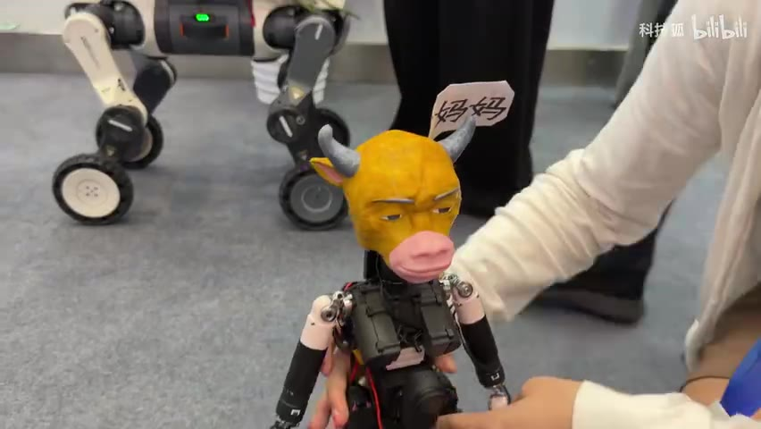
[00:30] 科技狐 / mov8 / 而且是实际的应用场景
[00:40] 科技狐ii / 组织形态
[00:50] 原本只是说那个我们做思想实验
[01:00] 科技狐 / 他们就切实发现了
[01:10] 他们让机器人自自主学习
[01:20] 技狐 / bilibili / 你这个事做的对还是不对
[01:30] 科技狐 / bilibili / 另外机器人会跟着学
[01:40] 我有点玻脚的机器人
[01:50] 科技狐 / 就会对整体的效果会更好
[02:00] 科技狐bil / 在实践中涌现出来的问题
[02:10] 科技狐 / 送给那个
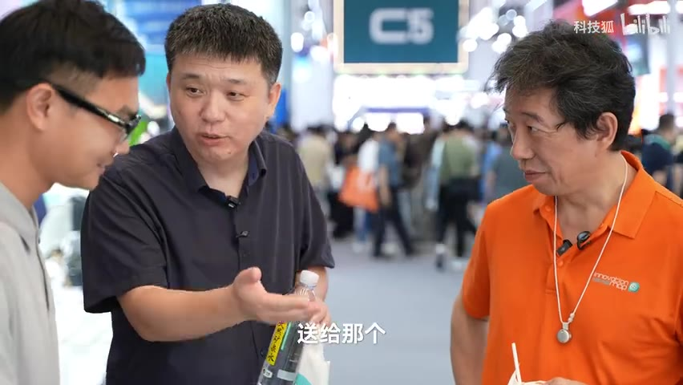
[02:20] 技狐-
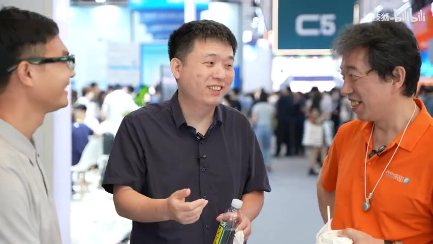
[02:30] 也就是我们的小脑的部分越来越强
[02:40] 科技狐 / 还是没有解决
[02:50] 科技 / 所以对这个世界的
[03:00] 通用型的机器人的方案
[03:10] 科技狐 / bilibii / 也让我看到乐观的部分
[03:20] 科技狐I
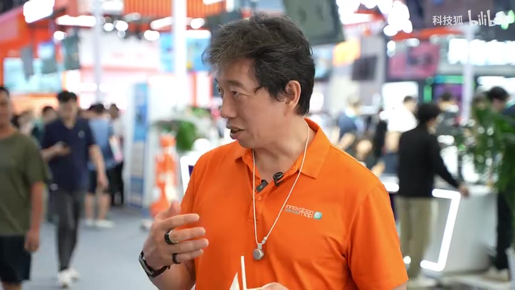
[03:30] 科技狐ii / 所以这个是让我觉得还不错
[03:40] 科技狐 / bili / 在更多的场景落地
[03:50] 科技狐 / bilibil / 短期内至少是达不到的
[04:00] 支洲 / 那你们两位看来
[04:10] silbili / 就你觉得现在大概是一个什么阶段
[04:20] 它他确实不能这么比
[04:30] 科技狐 / LiliL / 自动驾驶也可以当成一个机器人看
[04:40] ibili / 那么所以
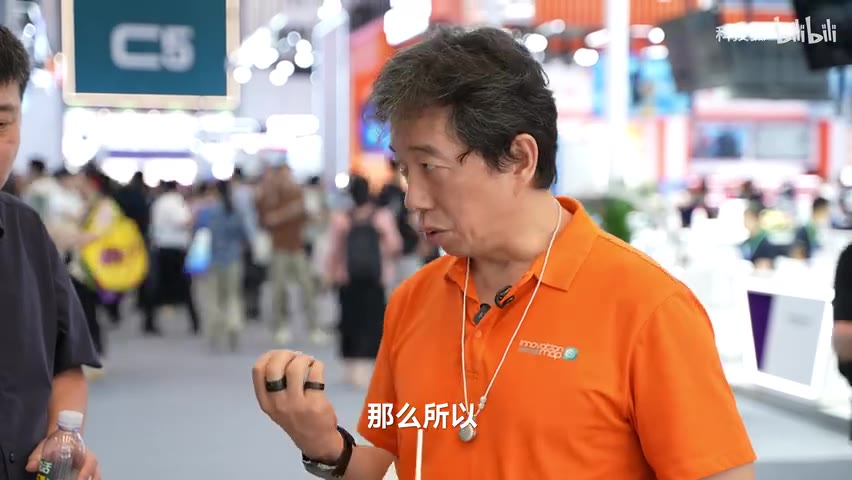
[04:50] 所以就最简单的机器人处理
[05:00] 科技狐协l / 机器人可以做到很好
[05:10] 科技狐i / 我还能带个头像对不对
[05:20] 科技狐i / movotian / 就刚才讲的
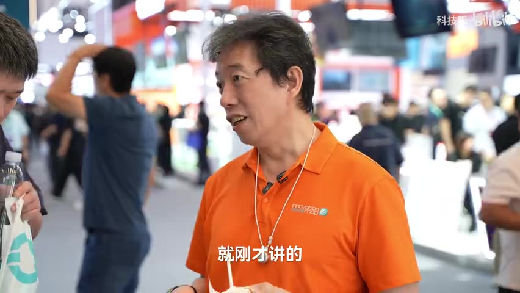
[05:30] 科技狐 / Lilibil / 其实对我们的最大的考验是什么
[05:40] 科技狐i / 就是如果说不能满足
[05:50] 科技狐 / 晓驭万象 / YUHESEN / 我刚刚也看了踢足球
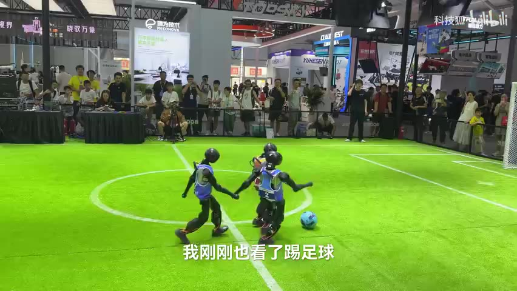
[06:00] 科技ll / 然后我们原来去看机器人世界杯
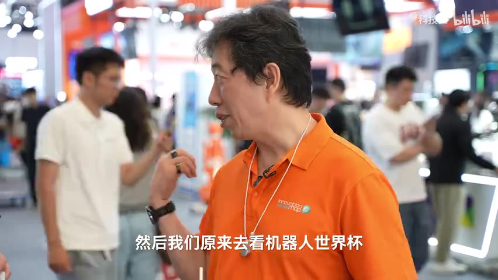
[06:10] 技狐 / 它他配合做的特别好
[06:20] bilibili / 它就拿着身子去撞球嘛
[06:30] 技狐 / bilbil / 如果你想想看
[06:40] 科技狐山 / 而我自身的控制也很复杂
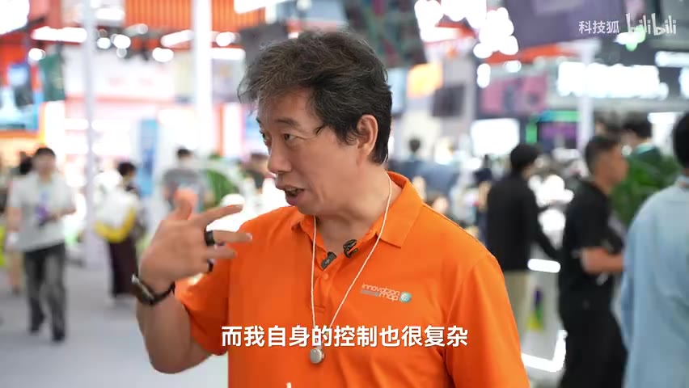
[06:50] 科技狐 / 那么多创业公司的考验就是
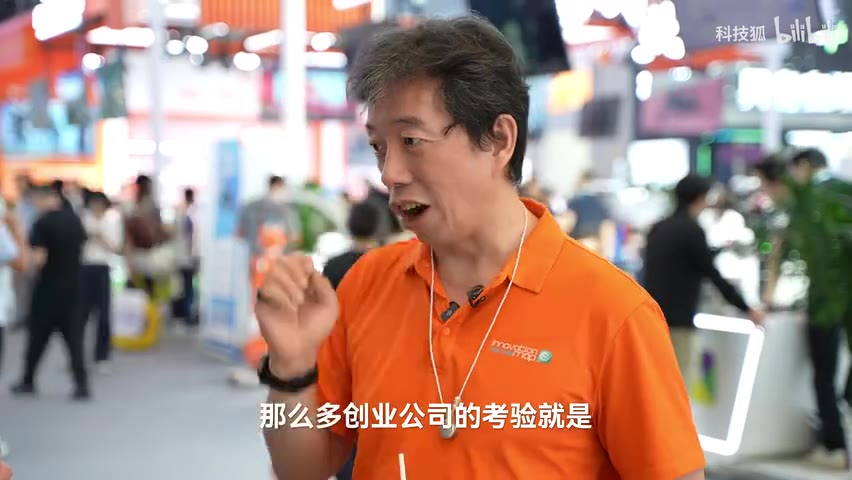
[07:00] 科技狐 / 像矿山那种就蛮好的
[07:10] Bibili / irovp
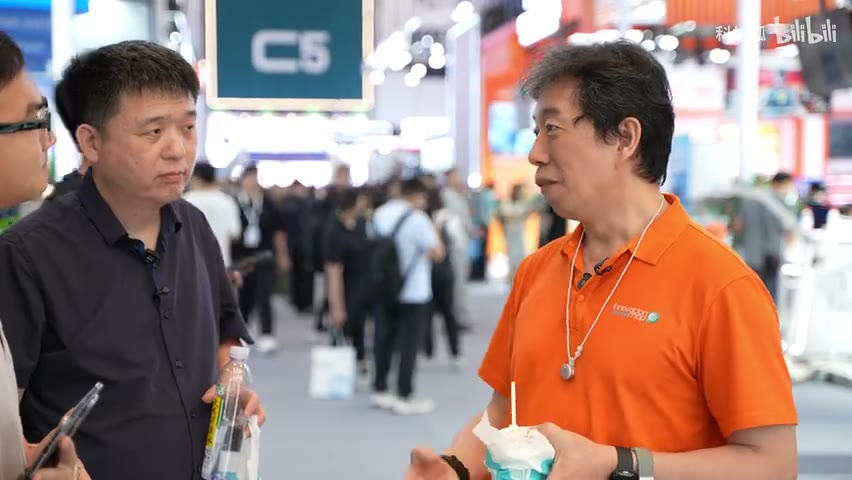
[07:20] bilibi / 那我就算一下这个中国
[07:30] 皮狐bilii / 一起挖掘出哪些领域
[07:40] 而不是说一个通用的
[07:50] 还是好像资本也好
[08:00] 对这是王老师的一贯思想
[08:10] 科技狐I
[08:20] 你们觉得是身体重要还是大脑重要
[08:30] 科技狐 / 那智能遥控就好了嘛对吧
[08:40] 科技狐 / 对吧就是这个会有广泛用途的
[08:50] （无文字）
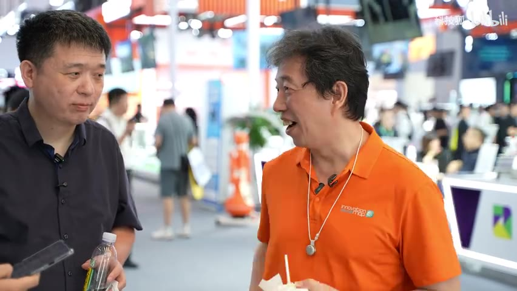
[09:00] 好像在我们中国的这个观念里面
[09:10] 技狐blli / 故通用的这个路线
[09:20] 料技狐 / Libili / 有一家公司说法叫做原子能力
[09:30] 科技狐Ll / 有几家公司我们看到已经在做了
[09:40] 技狐机 / 但的确有中国公司在做这件事
[09:50] 科技狐 / 不是
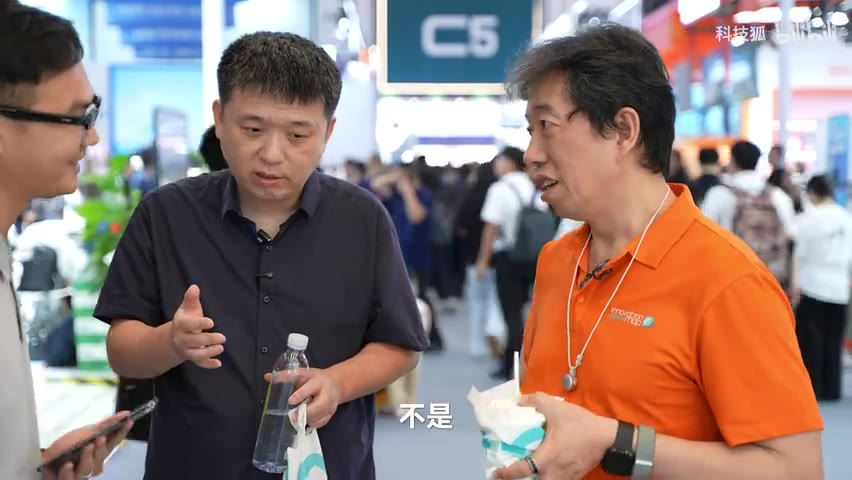
[10:00] 所以我们不批评中国人员机器人
[10:10] 后来就把去年说成一万台
[10:20] 科技狐 / 对而且他Robbtaxi现在也没有上路跑
[10:30] 山i / 问问题是很刁钻的
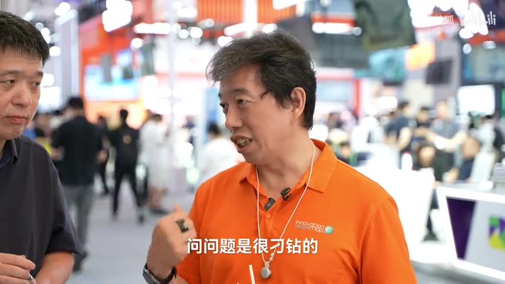
[10:40] 科技狐 / 我可能在这场地上训练了
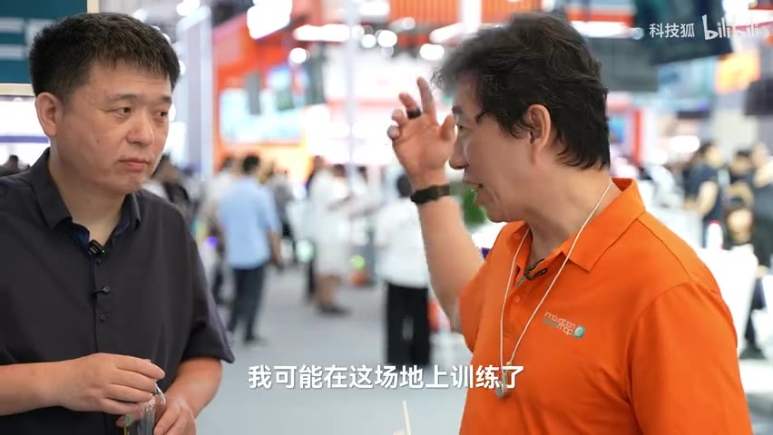
[10:50] 科技狐 / 进产线干一个活就很难
[11:00] 科技狐 / mop8
[11:10] 支狐bi / inmovg8
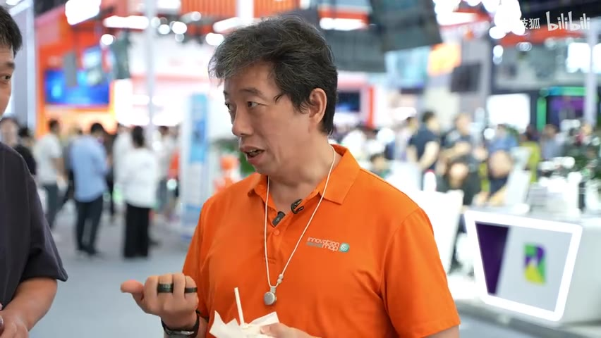
[11:20] 就理论上讲这是不可容忍的
[11:30] 科技狐i / 就是特斯拉
[11:40] 科技训 / Silibi / innovtio / 他说他把那个
[11:50] 技圾# / Cybertruck没法卖
[12:00] 您能容纳多少辆Cybertruck
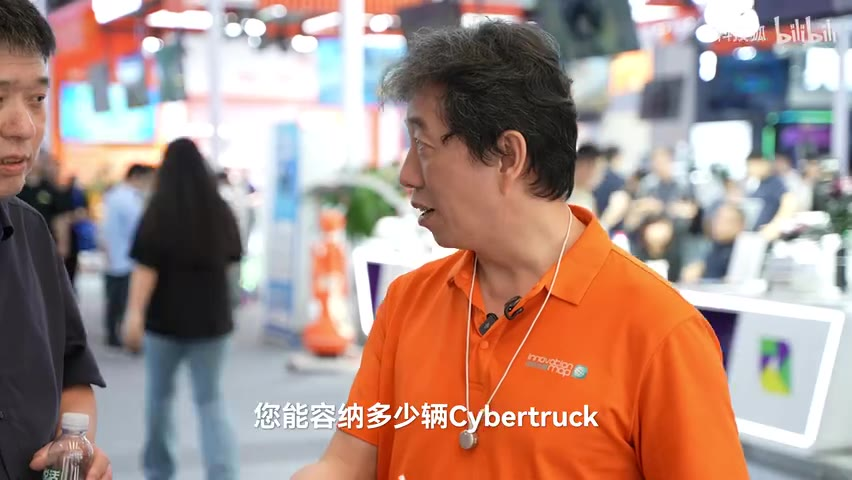
[12:10] 科技狐 / 今年就算没有百万
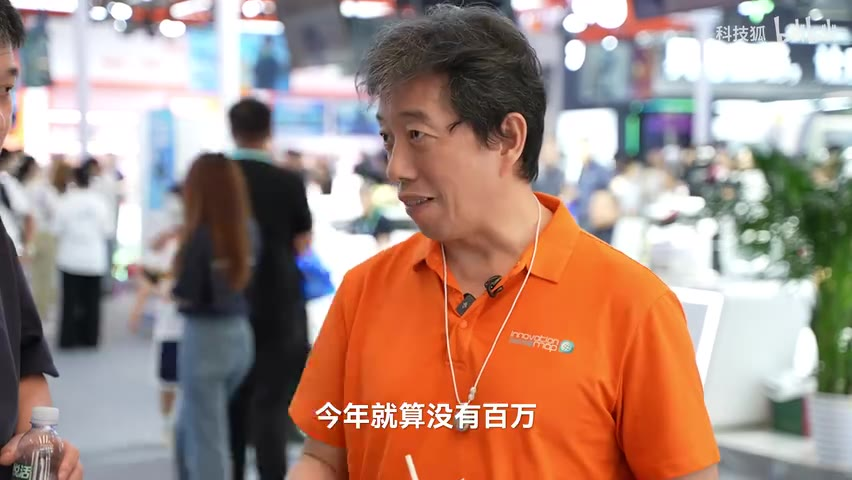
[12:20] 科技blbil
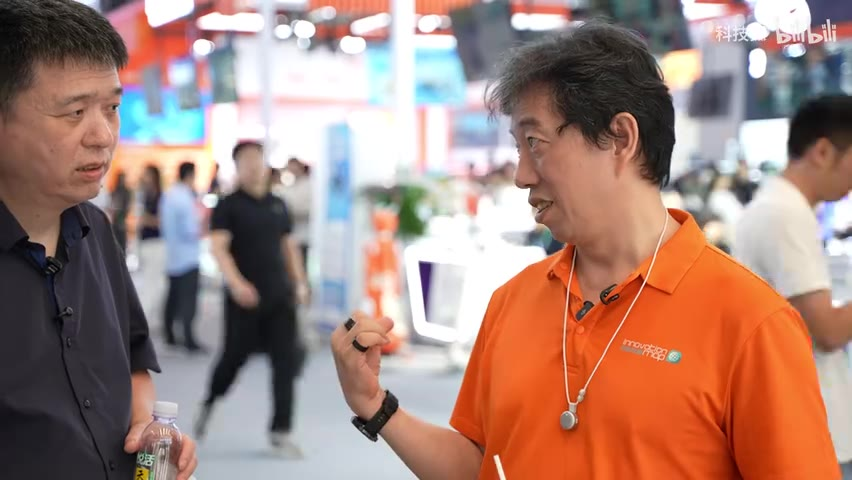
[12:30] 因为你想我都FSD
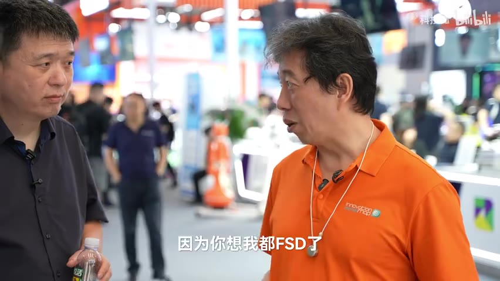
[12:40] Libili / 科技狐 / 那个你们大家这个
[12:50] 科技狐 / bilibili / 我这城市我要多少辆出租车
[13:00] 科技狐 / LiliLi / 重心全都放在SpaceX了
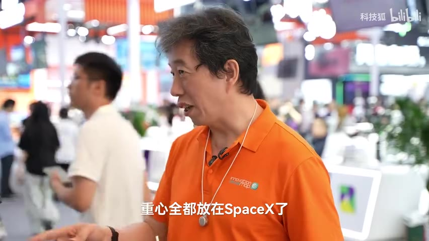
[13:10] 科技狐 / bilibili / 美国基建没有人比他懂
[13:20] 狐bilibili / 明年做到10吉瓦的计算中心
[13:30] bilibili / 科技狐 / 10吉瓦是稳赚不赔
[13:40] 科技狐
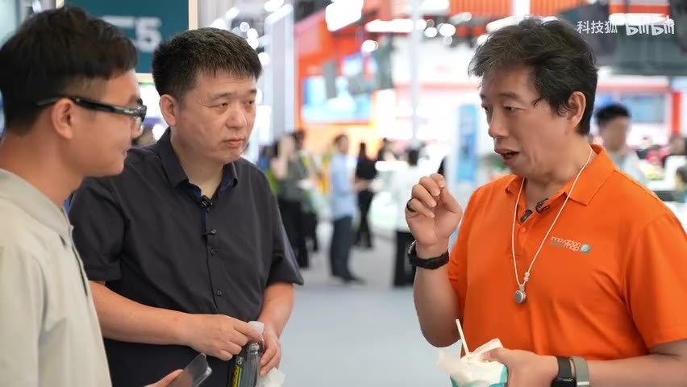
[13:50] 科技狐 / bilibili / 因为他的这个工程能力特别强
[14:00] 科技狐 / binI / 它不是它效率特别高
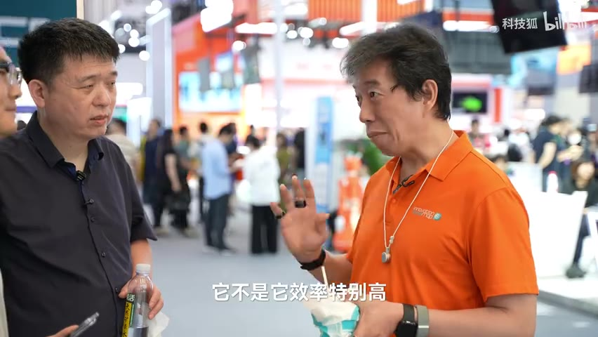
[14:10] 科技狐bilibili / 所以真的有可能它在
[14:20] 科技狐 / biisii / 算力能达到干亿规模
[14:30] 科技狐 / 对吧
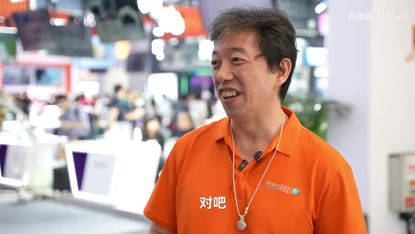
[14:40] 科技狐 / 就是你看好像国内的
[14:50] 科技狐 / bilibili / 或者是觉得为什么会
[15:00] 料技狐blli / 而是汽车供应链相关企业
[15:10] 科技狐 / biibii / imovctiop
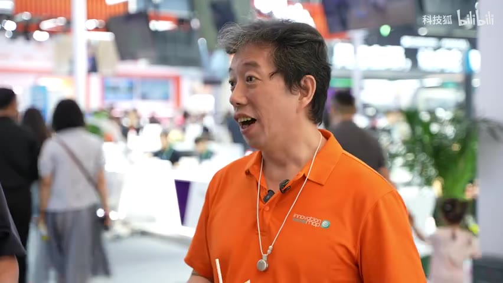
[15:20] 科技狐 / bilibli / 都给机器人造了
[15:30] 科技狐 / biibili / novtian / 竞争太激烈
[15:40] 科技狐 / movgtoa / 对吧那都在卷车
[15:50] 科技狐 / inov8g / 我要抢救收视率
[16:00] 科技狐 / 就是我们会发现
[16:10] Siibili
[16:20] 牛技狐i / 然后比如说刚才我们设想的那个
[16:30] 科技狐i / 针对这个现场的持续学习
[16:40] 科技狐l / 大家都运行在一个
[16:50] 科技狐ilM / 明天你这些都需要人去做
[17:00] 科枝狐 / Mili / 机器人能干的事的特点就是重复
[17:10] bilibili / 就天天就那 / 对吧
[17:20] 科技狐l / 那个我们已经都是
[17:30] 科技狐 / bilibi / 但是依然是高度重复的
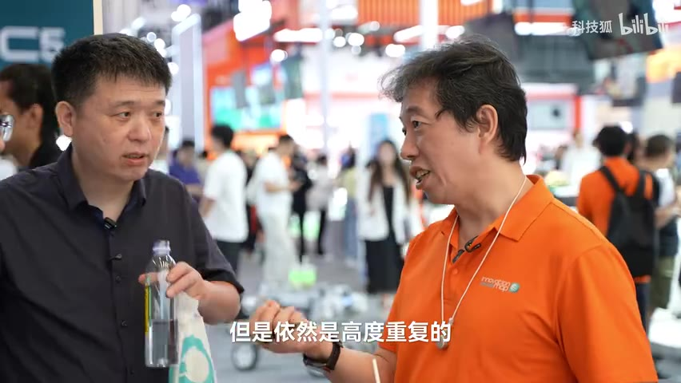
[17:40] 科技狐 / bilibili / 就是机器人不是一个没有
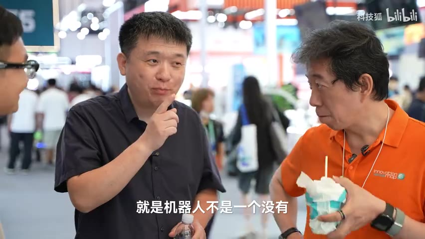
[17:50] 科技狐 / bilb / 它会自我送代
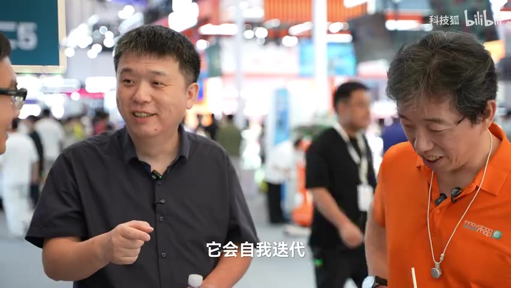
[18:00] libii / 其实A对事情是不负责任的
[18:10] 科技狐ilibii / 那那我们回到机器人这一块
[18:20] 科技狐l / 就是说机器人管理的这这个学问
[18:30] biibili / 设计能不能容忍它出事
[18:40] 科技狐 / bilibii
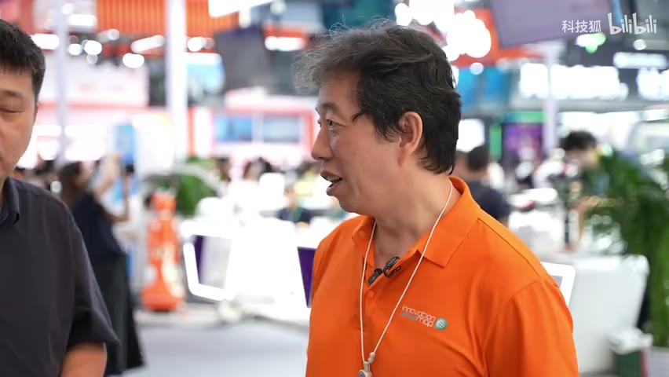
[18:50] 科技狐 / Silibii / 我失事理赔嘛对吧
[19:00] 科技狐 / bili / 的在共存在协作了
[19:10] 科技狐 / bilibili
[19:20] 科技狐 / bilibili / 没有我觉得其实5年之后
[19:30] 科技狐 / bill / 就是说未来你会发现你
[19:40] 科技狐# / 机器人也是你的Agent之一
[19:50] 科技狐 / 我还可以预期的一点就是
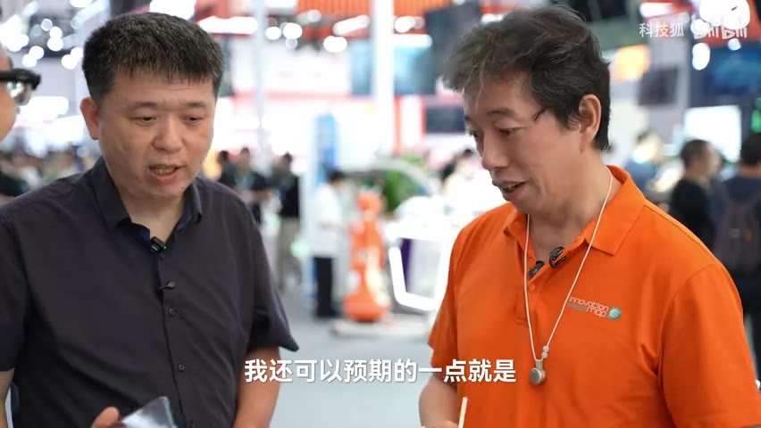
[20:00] 科技狐 / bili / 它们还不如自己摸索
[20:10] bilibili / 将来会5年之后就不这么做了
[20:20] libili / 对对
[20:30] 我用人类语言沟通
[20:40] 科技狐
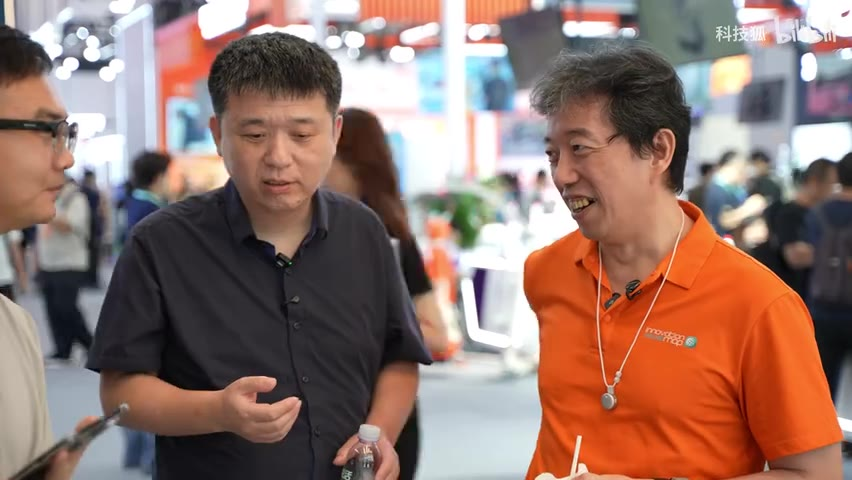
[20:50] 科技bubi / 那我们今天观察
[21:00] 科技狐 / 就是我们说那个泡沫对
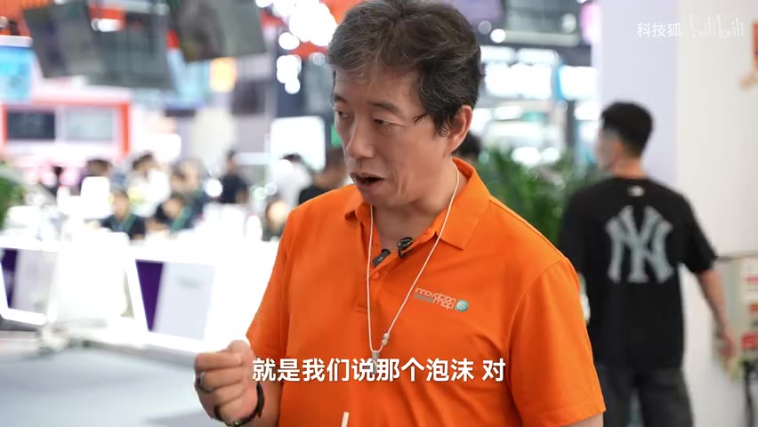
[21:10] 科技狐 / 历史规律看
[21:20] 科技狐# / 结果预期过高造成了不能
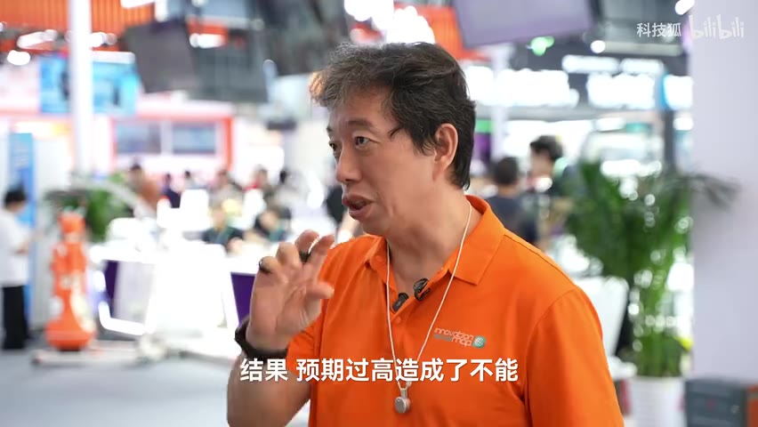
[21:30] 科技狐 / 没等几个月就回来了对吧
[21:40] 科技狐l / 泡沫不是之后一地鸡毛
[21:50] movgta / 但是股市对企业影响会非常大
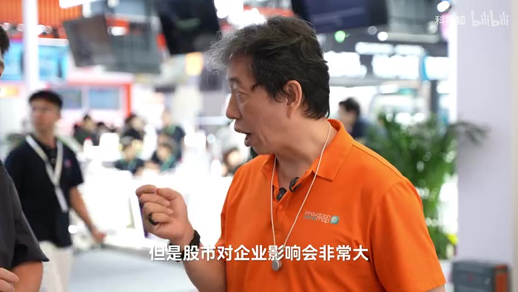
[22:00] bilibili / 2029年就互联网当时也是
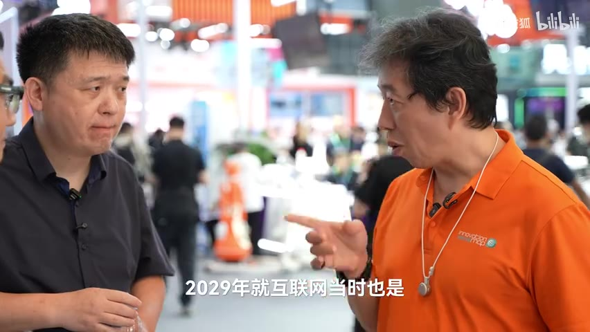
[22:10] 科技 / ibii / 这是2029年有一劫
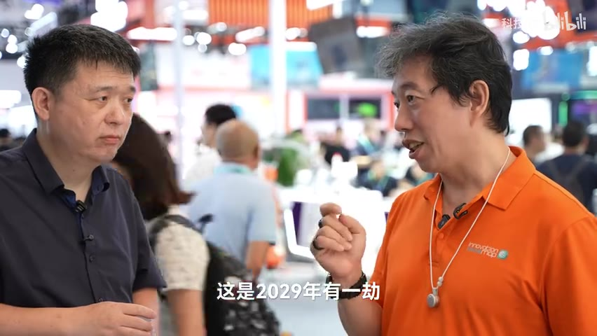
[22:20] 技狐bilbi / 我都怀疑韩国2029年国家都得破产
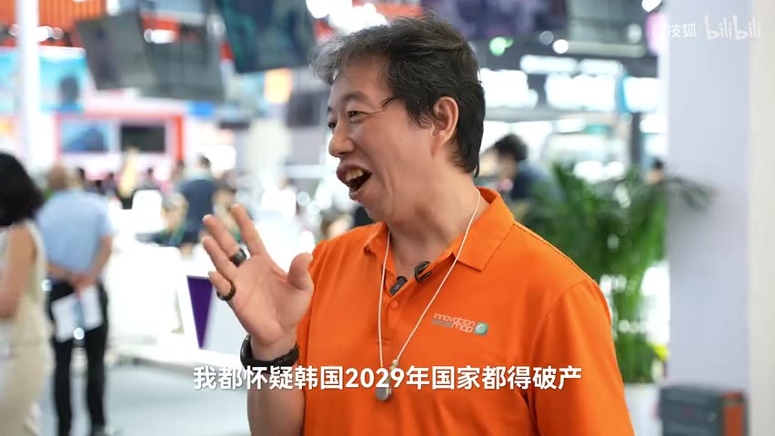
[22:30] 科狐洲街 / 整体是向好的
[22:40] 技狐 / 中国也会有一定的这个风险会更晚
[22:50] 科技狐#市 / 所以中国的机器人产业2029年
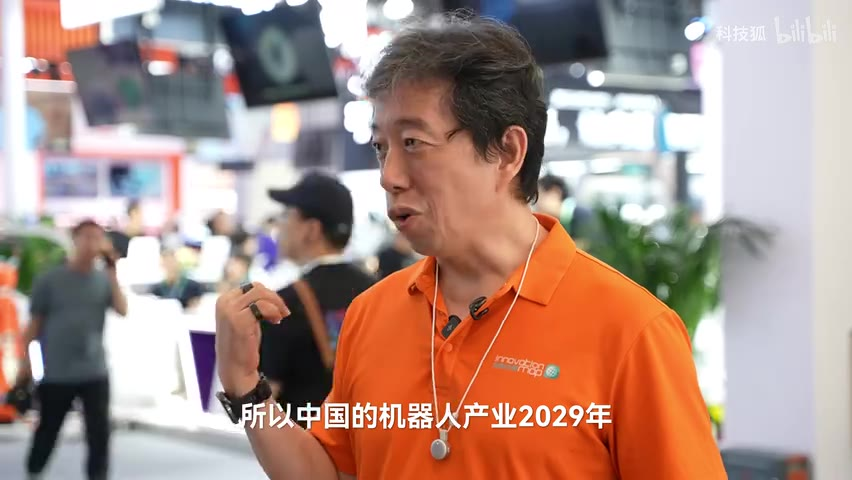
[23:00] 技狐ilil / 耐心资本撑着
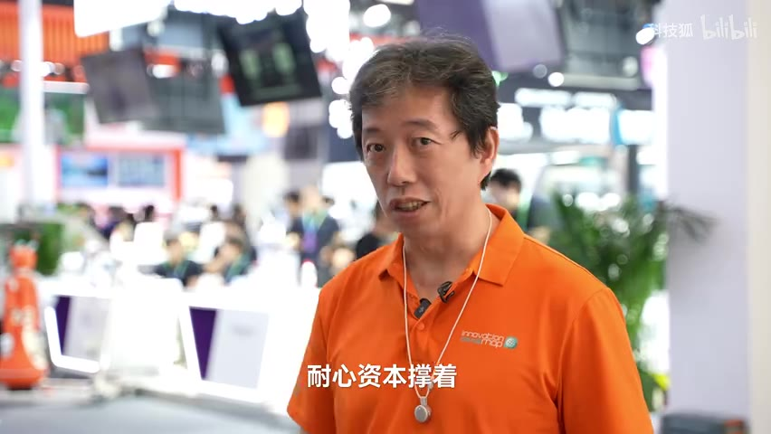
[23:10] 科技 / 好嘞